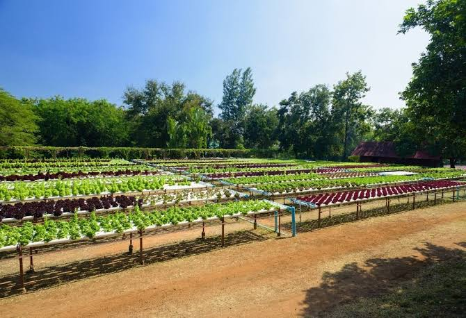
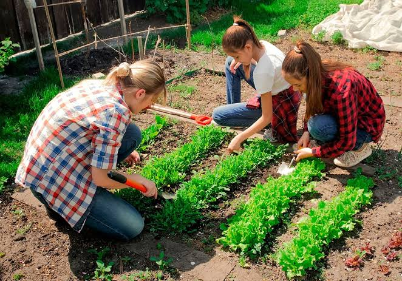

Sostenibilidad
Utilizamos técnicas agrícolas limpias, compostaje natural y sistemas de riego eficientes para proteger la biodiversidad del suelo.
Somos un emprendimiento dedicado a la producción y distribución de alimentos 100% orgánicos en la zona central de Chile. Nuestro proyecto nace en Paine con la misión de promover un estilo de vida saludable y libre de químicos.
Utilizamos técnicas agrícolas limpias, compostaje natural y sistemas de riego eficientes para proteger la biodiversidad del suelo.
Cosechamos los productos a pedido para asegurar que lleguen a tu hogar con el máximo sabor y valor nutricional intacto.
Apoyamos el trabajo agrícola de pequeños productores de la región, fomentando un modelo de negocio justo y transparente.


📍 Visítanos en nuestro Huerto
🌱 Los dejamos coordialmente invitados a visitar nuestro espacio, conocer nuestros productos frescos y disfrutar de una experiencia más cercana con la naturaleza. Para compartir con la familia y aprender de nuestro enterno
📌 Ubicación: Parcela 67, Paine, Chile